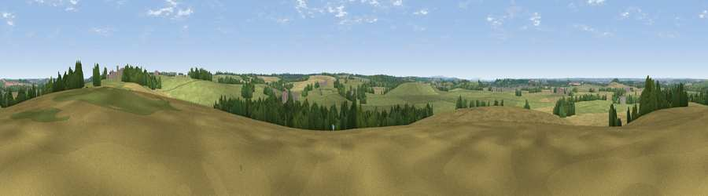

Viewpoint near Harbury
#31813 in England · top 60% of its area beats it · near Harbury · footpathWhere it is
The exact computed spot (SP 34825 59325). Click the marker for map links.
Public access: a public right of way passes within 46 m of this spot. Computed from Natural England's CRoW access layer and OpenStreetMap rights of way — not the legal definitive map. Always verify locally.
The view, rendered

A 360° render of this exact spot computed from the terrain model, tree cover and land cover — summer colours, afternoon light, calibrated against photographs of famous viewpoints. Real trees, hedges and buildings will differ in detail.
The panorama
Grey silhouette: terrain skyline in each direction (720 bearings, Earth curvature and refraction included). Dashed green: skyline with trees (+15 m) and buildings (+8 m) as obstacles. Blue strip: how far the ground is visible on each bearing.
Where the view opens
Wedge length = distance to the farthest visible ground on that bearing (vegetation-aware). Rings at 10, 25 and 50 km.
What fills the view
55% grassland · 32% cropland · 10% woodland · 1% built-up · 1% water
Angular shares of the visible panorama (visual magnitude), not map area. Landscape diversity 0.45 (0–1 Shannon).
Key numbers
More beautiful places nearby
The staircase of upgrades: each row has a higher view potential than everything closer. Driving times are estimates from straight-line distance, calibrated against real road routing — check an actual route before setting out.
| Place | Direction | Drive | Score |
|---|---|---|---|
| Crown Hill | N · 3 km | ~8 min | 41.7 |
| Viewpoint near Northend | SSE · 9 km | ~17 min | 65.3 |
| Viewpoint near Northend | SSE · 9 km | ~18 min | 66.0 |
| Viewpoint near Northend | SSE · 9 km | ~18 min | 69.7 |
| Viewpoint near Northend | SSE · 9 km | ~18 min | 70.3 |
| Viewpoint near Radway | SSE · 11 km | ~21 min | 71.7 |
| Viewpoint near Ilmington | SW · 22 km | ~37 min | 72.6 |
| Viewpoint near Meon Vale | SW · 22 km | ~37 min | 77.0 |
52.23103, -1.49152 · source: screening · position refined by local search. Computed location — check access rights before visiting.